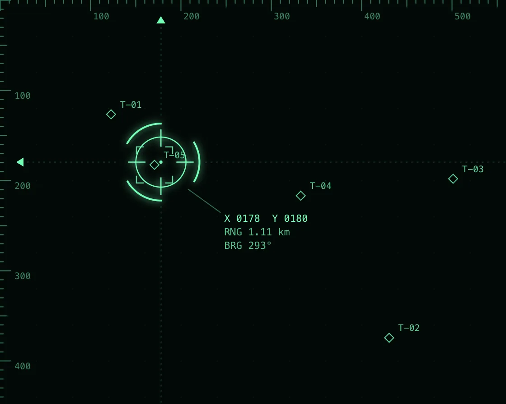

Targeting HUD
Targeting HUD is a Canvas effect: spring-damped reticle, edge rulers, and brackets that close to lock. One plain JavaScript file with no dependencies; add it with npx motion-library add crosshair-hud.

Open it live, tune it and copy the code
What is Targeting HUD?
A targeting reticle follows the pointer with live readouts, and brackets close in to lock onto contacts.
How does Targeting HUD work?
The reticle chases the pointer on a critically damped spring, so it settles without overshoot; every hairline is snapped to the device pixel grid.
How do I add Targeting HUD to my website?
- In your project folder, run
npx motion-library add crosshair-hud. It writesanimations/crosshair-hud.js. Needs Node 18 or newer. - Import it and call it with a container element that has a size:
import fx from './animations/crosshair-hud.js'; const stop = fx(document.querySelector('#hero')); - Call
stop()to clean up, for example when a component unmounts.
Every setting below is also a flag, so you can install it already tuned: npx motion-library add crosshair-hud --follow 20.
What settings can I tweak?
| Setting | Flag | Default | Range | Step |
|---|---|---|---|---|
| Follow | --follow | 9 | 3 to 20 | 0.5 |
| Contacts | --contacts | 5 | 1 to 9 | 1 |
Specifications
- Renderer
- Canvas 2D
- Category
- Retro & signal
- Dependencies
- None
- File size
- 8.4 KB, unminified
- Interactive
- Yes: it responds to the pointer
- Reduced motion
- Respects prefers-reduced-motion
- Licence
- MIT-0: use it anywhere, no credit needed
Source code
// Targeting HUD: the reticle chases the pointer on a critically damped spring, so it settles without overshoot.
// Edge rulers carry markers for its x and y, a readout gives position, range and bearing from the centre, and
// when it rests near a contact, four corner brackets close in on it over half a second and it locks. Every line
// is snapped to the device pixel grid so it stays hairline-sharp. With no pointer, a ghost hunts the contacts.
const PARAMS = { follow: 9, contacts: 5 };
export default function (stage) {
const reduce = matchMedia('(prefers-reduced-motion: reduce)').matches;
const canvas = document.createElement('canvas');
canvas.style.cssText = 'position:absolute;inset:0;width:100%;height:100%;display:block;touch-action:none;cursor:none';
stage.append(canvas);
const ctx = canvas.getContext('2d');
let W = 0, H = 0, D = 1;
const resize = () => { D = Math.min(devicePixelRatio, 2); W = stage.clientWidth || 1; H = stage.clientHeight || 1; canvas.width = W * D | 0; canvas.height = H * D | 0; };
const ro = new ResizeObserver(resize); ro.observe(stage); resize();
const HUD = '#74ffb8', LOCK = '#ffb02e', FONT = 'ui-monospace, SFMono-Regular, Menlo, monospace';
const n = Math.max(1, Math.min(9, Math.round(PARAMS.contacts)));
const C = Array.from({ length: n }, (_, i) => ({ u: 0.15 + Math.random() * 0.7, v: 0.18 + Math.random() * 0.64, a: Math.random() * 6.28, s: 0.004 + Math.random() * 0.008, lock: 0, id: `T-${String(i + 1).padStart(2, '0')}` }));
const R = { x: W / 2, y: H / 2, vx: 0, vy: 0 }, aim = { x: W / 2, y: H / 2 };
let pointer = false, lastMove = -1e9, ghostI = 0, ghostT = 0;
const onMove = e => { const r = canvas.getBoundingClientRect(); aim.x = e.clientX - r.left; aim.y = e.clientY - r.top; pointer = true; lastMove = performance.now(); };
const onLeave = () => { pointer = false; };
canvas.addEventListener('pointermove', onMove); canvas.addEventListener('pointerdown', onMove); canvas.addEventListener('pointerleave', onLeave);
const px = v => Math.round(v * D) / D + 0.5 / D; // snap a 1-device-px line to the pixel grid
let raf, last = performance.now(), t = 0;
function frame(now) {
const dt = Math.min(0.05, (now - last) / 1000); last = now; t += dt;
// contacts drift slowly
if (!reduce) for (const c of C) { c.a += (Math.random() - 0.5) * dt; c.u += Math.cos(c.a) * c.s * dt; c.v += Math.sin(c.a) * c.s * dt; if (c.u < 0.1 || c.u > 0.9) c.a = Math.PI - c.a; if (c.v < 0.14 || c.v > 0.86) c.a = -c.a; }
// ghost: hop from contact to contact, dwelling long enough to lock
if (!pointer || now - lastMove > 3000) {
if (reduce) { aim.x = C[0].u * W; aim.y = C[0].v * H; }
else { ghostT += dt; if (ghostT > 2.6) { ghostT = 0; ghostI = (ghostI + 1 + (Math.random() * (n - 1) | 0)) % n; } aim.x = C[ghostI].u * W + 6; aim.y = C[ghostI].v * H - 4; }
}
// critically damped spring
const k = PARAMS.follow;
if (reduce) { R.x = aim.x; R.y = aim.y; }
else { const ax = k * k * (aim.x - R.x) - 2 * k * R.vx, ay = k * k * (aim.y - R.y) - 2 * k * R.vy; R.vx += ax * dt; R.vy += ay * dt; R.x += R.vx * dt; R.y += R.vy * dt; }
ctx.setTransform(D, 0, 0, D, 0, 0);
ctx.fillStyle = '#030907'; ctx.fillRect(0, 0, W, H);
// dot grid
ctx.fillStyle = 'rgba(116,255,184,0.08)';
for (let x = 40; x < W; x += 40) for (let y = 40; y < H; y += 40) ctx.fillRect(Math.round(x), Math.round(y), 1, 1);
ctx.lineWidth = 1;
// edge rulers
ctx.strokeStyle = 'rgba(116,255,184,0.45)'; ctx.beginPath();
for (let x = 0; x < W; x += 10) { const L = x % 100 === 0 ? 12 : x % 50 === 0 ? 8 : 4; ctx.moveTo(px(x), 0); ctx.lineTo(px(x), L); }
for (let y = 0; y < H; y += 10) { const L = y % 100 === 0 ? 12 : y % 50 === 0 ? 8 : 4; ctx.moveTo(0, px(y)); ctx.lineTo(L, px(y)); }
ctx.stroke();
ctx.font = `10px ${FONT}`; ctx.fillStyle = 'rgba(116,255,184,0.5)'; ctx.textBaseline = 'top';
for (let x = 100; x < W - 20; x += 100) ctx.fillText(String(x), x + 3, 14);
for (let y = 100; y < H - 10; y += 100) ctx.fillText(String(y), 16, y + 2);
// ruler markers for the reticle
ctx.fillStyle = HUD;
ctx.beginPath(); ctx.moveTo(R.x, 18); ctx.lineTo(R.x - 5, 26); ctx.lineTo(R.x + 5, 26); ctx.fill();
ctx.beginPath(); ctx.moveTo(18, R.y); ctx.lineTo(26, R.y - 5); ctx.lineTo(26, R.y + 5); ctx.fill();
// long crosshair lines with a gap around the reticle
const gap = 46 * Math.max(1, Math.min(1.7, Math.min(W, H) / 420));
ctx.strokeStyle = 'rgba(116,255,184,0.22)'; ctx.setLineDash([2, 4]); ctx.beginPath();
ctx.moveTo(30, px(R.y)); ctx.lineTo(R.x - gap, px(R.y)); ctx.moveTo(R.x + gap, px(R.y)); ctx.lineTo(W, px(R.y));
ctx.moveTo(px(R.x), 30); ctx.lineTo(px(R.x), R.y - gap); ctx.moveTo(px(R.x), R.y + gap); ctx.lineTo(px(R.x), H);
ctx.stroke(); ctx.setLineDash([]);
// contacts, lock progress and brackets
let locked = null;
for (const c of C) {
const cx = c.u * W, cy = c.v * H, d = Math.hypot(cx - R.x, cy - R.y);
const want = d < 44 ? 1 : 0;
c.lock += (want ? dt * 2 : -dt * 4); c.lock = Math.max(0, Math.min(1, c.lock));
const full = c.lock >= 1;
if (full) locked = c;
ctx.strokeStyle = full ? LOCK : 'rgba(116,255,184,0.8)'; ctx.fillStyle = ctx.strokeStyle;
ctx.beginPath(); ctx.moveTo(cx, cy - 5); ctx.lineTo(cx + 5, cy); ctx.lineTo(cx, cy + 5); ctx.lineTo(cx - 5, cy); ctx.closePath(); ctx.stroke();
ctx.font = `10px ${FONT}`; ctx.textBaseline = 'middle'; ctx.fillText(c.id, cx + 10, cy - 10);
if (c.lock > 0) {
const e = 1 - Math.pow(1 - c.lock, 3), s = 70 - 50 * e, arm = 8;
ctx.globalAlpha = Math.min(1, c.lock * 3);
ctx.beginPath();
for (const [sx, sy] of [[-1, -1], [1, -1], [1, 1], [-1, 1]]) {
const bx = cx + sx * s, by = cy + sy * s;
ctx.moveTo(bx, by - sy * arm); ctx.lineTo(bx, by); ctx.lineTo(bx - sx * arm, by);
}
ctx.lineWidth = full ? 2 : 1.25; ctx.stroke(); ctx.lineWidth = 1;
ctx.globalAlpha = 1;
}
}
// reticle: ring, inner ticks, slowly turning outer arcs, centre dot
const col = locked ? LOCK : HUD, Z = Math.max(1, Math.min(1.7, Math.min(W, H) / 420));
ctx.shadowColor = col; ctx.shadowBlur = 8 * D;
ctx.strokeStyle = col; ctx.fillStyle = col; ctx.lineWidth = 1.25;
ctx.beginPath(); ctx.arc(R.x, R.y, 26 * Z, 0, 6.2832); ctx.stroke();
ctx.beginPath();
for (let i = 0; i < 4; i++) { const a = i * Math.PI / 2; ctx.moveTo(R.x + Math.cos(a) * 16 * Z, R.y + Math.sin(a) * 16 * Z); ctx.lineTo(R.x + Math.cos(a) * 34 * Z, R.y + Math.sin(a) * 34 * Z); }
ctx.stroke();
const spin = reduce ? 0 : t * (locked ? 2.2 : 0.6);
ctx.lineWidth = 2;
for (let i = 0; i < 3; i++) { ctx.beginPath(); ctx.arc(R.x, R.y, 40 * Z, spin + i * 2.094, spin + i * 2.094 + 1.1); ctx.stroke(); }
ctx.lineWidth = 1;
ctx.beginPath(); ctx.arc(R.x, R.y, 1.8, 0, 6.2832); ctx.fill();
ctx.shadowBlur = 0;
// readout
const dx = R.x - W / 2, dy = R.y - H / 2, rng = Math.hypot(dx, dy) / 100, brg = ((Math.atan2(dx, -dy) * 180 / Math.PI) + 360) % 360;
const lines = [`X ${String(Math.round(R.x)).padStart(4, '0')} Y ${String(Math.round(R.y)).padStart(4, '0')}`, `RNG ${rng.toFixed(2)} km`, `BRG ${String(Math.round(brg)).padStart(3, '0')}°`];
if (locked) lines.push((reduce || (t * 3 % 1) < 0.6) ? `LOCK ${locked.id}` : '');
const flipX = R.x > W - 190, flipY = R.y > H - 110;
const tx = R.x + (flipX ? -70 : 70), ty = R.y + (flipY ? -70 - lines.length * 15 : 58);
ctx.font = `11px ${FONT}`; ctx.textAlign = flipX ? 'right' : 'left'; ctx.textBaseline = 'top';
ctx.fillStyle = 'rgba(3,9,7,0.7)'; ctx.fillRect(flipX ? tx - 132 : tx - 6, ty - 5, 138, lines.length * 15 + 8);
lines.forEach((l, i) => { ctx.fillStyle = i === 3 ? LOCK : i === 0 ? col : 'rgba(116,255,184,0.75)'; ctx.fillText(l, tx, ty + i * 15); });
ctx.textAlign = 'left';
// leader line from the reticle to the box
ctx.strokeStyle = 'rgba(116,255,184,0.4)'; ctx.beginPath(); ctx.moveTo(R.x + (flipX ? -30 : 30), R.y + (flipY ? -30 : 30)); ctx.lineTo(tx + (flipX ? 4 : -4), ty + (flipY ? lines.length * 15 : -2)); ctx.stroke();
raf = requestAnimationFrame(frame);
}
raf = requestAnimationFrame(frame);
return () => { cancelAnimationFrame(raf); ro.disconnect(); canvas.removeEventListener('pointermove', onMove); canvas.removeEventListener('pointerdown', onMove); canvas.removeEventListener('pointerleave', onLeave); canvas.remove(); };
}